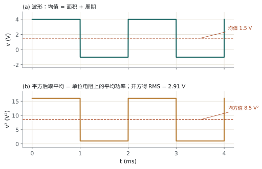
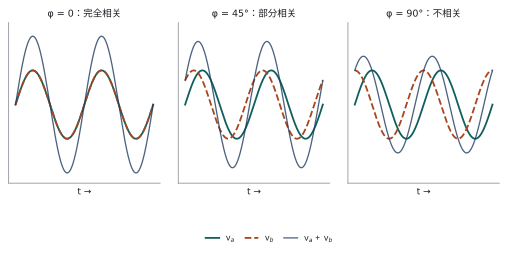
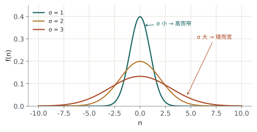
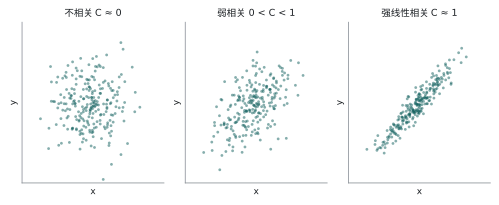
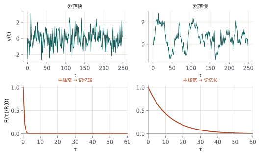
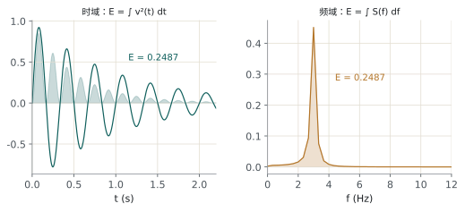
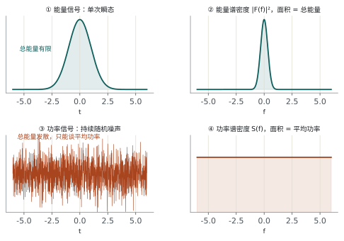

先把噪声描述清楚 从"两类不良影响"到"功率谱密度"，一条从统计量走向频域的推理链
噪声没有确定的时域波形，只能写统计量：均值＝直流，均方值＝功率，相关＝变化快慢。但这些还不够——真正决定"能测到多小的信号"的，是噪声在频域上的分布。
2.1噪声是什么
2.1.1 为什么噪声值得担忧
噪声是叠加在有用信号上、掩盖其信息内容的无用扰动。它的危害不是"听起来吵"，而是给整个系统设了一组硬上限：
| 被限制的量 | 机理 |
|---|---|
| 可被放大的信号幅度下限 | 信号小于噪声时，放大只是把两者一起放大，信噪比不变 |
| 放大器的增益上限 | 增益再大，输出端的噪声底也跟着抬高 |
| 探测器的最小可检测信号 | 由噪声等效功率（NEP）决定，与后续电路无关 |
| 微弱模拟量的测量误差 | 单次读数的随机误差由噪声 RMS 决定 |
| 存储器中二进制数据的可靠性 | 噪声导致误码，限制存储密度与速度 |
五条说的是同一件事：噪声决定分辨率。所以设计目标不是消灭噪声，而是在目标带宽内把噪声压得足够小。
2.1.2 内部噪声与外部噪声
按来源分两类，对付它们的方法完全不同：
| 特征 | 内部噪声 Intrinsic | 外部噪声 Extrinsic |
|---|---|---|
| 产生位置 | 器件 / 电路内部 | 电路外部，电路只是"接收天线" |
| 物理根源 | 载流子与电荷的离散性 | 天空噪声、雷电放电、寄生耦合、工频干扰 |
| 行为 | 随机，不可预测 | 非随机、确定性（可重复、有规律） |
| 频谱 | 覆盖全工程频段 | 频谱受限，集中在特定频率 |
| 典型幅度 | < 1 µV，很少超过 mV 的几分之一 | 可以很大 |
| 处理方法 | 统计描述（本课重点） | 屏蔽、接地、滤波、差分、避开频段 |
外部干扰是确定性的，用电路手段（屏蔽、平衡、共模抑制）解决；内部噪声是随机的，只能用统计手段（窄带、平均、相关）压制。把内部噪声当干扰去屏蔽，白费功夫。
2.1.3 一个例子：两类不良影响
课件用它把"让结果变差的因素"分成两类，这是全课第一个分水岭：
| 系统失真 Systematic distortions | 随机噪声 Stochastic noise | |
|---|---|---|
| 规律 | 确定、可复现、有函数关系 | 随机、不可预测、无规律 |
| 来源 | 传感器的线性度、传递函数、动态特性；设计、加工、标定环节 | 传感器、耦合匹配网络、放大器的第一级 |
| 能否预测 | 能，可用模型描述 | 不能，只能给概率分布 |
| 处理方式 | 标定、补偿（基线扣除、查表、反卷积） | 低噪声器件、相干检测、统计平均、滤波 |
| 多次测量 | 不能通过平均消除（每次都一样） | 可以通过平均压低（每次独立） |
系统失真可建模 → 可补偿；随机噪声无规律 → 只能统计抑制。后面的窄带、平均、锁相，全属于后者。
为什么点名"第一级"？第一级噪声被后面所有增益一起放大，而它前面增益为零。低噪声设计的功夫几乎都花在第一级。
2.1.4 从哪里衡量噪声：输入参考噪声
【课堂补充，课件该节未展开】
输出噪声随增益变化，只有折算到输入端的等效噪声才是器件固有属性，于是有了硬约定：
反相放大器的信号增益是 \(-R_f/R_g\)，但噪声增益是 \(1+R_f/R_g\)。因为噪声源等效在同相端，它看到的反馈网络与信号不同。选器件时若按信号增益折算输出噪声，会低估约 \((1+R_f/R_g)/(R_f/R_g)\) 倍。
2.2信号理论方法：把噪声当信号处理
核心思想一句：treat the noise as signal。像对待确定信号那样对它做平均、平方、积分、相关，结果就是真实的电压与功率。
| 方法 | 出发点 | 优点 | 局限 |
|---|---|---|---|
| 信号理论 | 实测波形的时间域运算（平均、平方、积分） | 物理意义强；结果直接是 V、V² | 只给少数统计量，是"部分描述" |
| 概率方法 | 概率密度函数 \(p(x)\) 出发的纯数学推导 | 完整，能给出分布律 | 物理意义弱；PDF 往往测不到 |
本课以信号理论为主：实际噪声是多种机制的混合，没有单一模型可算，只能靠测量表征；而测量表征天然是时域的平均与平方。
2.2.1 平均值 Average Value
\(T\) 的含义取决于信号类型：
| \(i(t)\) 类型 | \(T\) 取什么 | 结果 |
|---|---|---|
| 周期信号 | 信号周期 | 精确的直流分量 |
| 随机信号 | 实际观测时间 | 直流分量的估计值，\(T\) 越长越准 |
热噪声与散粒噪声都是零均值的：正负对称，长时间积分相互抵消。所以对纯噪声，第一个有意义的量是均方值，不是均值。
信号在 \(N\) 次平均中保持不变（相干叠加），噪声每次独立、按功率相加，其 RMS 只增长 \(\sqrt{N}\)。于是
\[ \mathrm{SNR}_N=\frac{N\,v_s}{\sqrt{N}\,\sigma_n}=\sqrt{N}\cdot\mathrm{SNR}_1 \]
平均 \(N\) 次，SNR 提升 \(\sqrt{N}\) 倍——这就是信号平均器的全部原理。想要 SNR 提高 10 倍，就得平均 100 次。
2.2.2 均方值与有效值
均方值在数值上等于单位电阻上的平均功率（\(R=1\,\Omega\) 时 \(P=\overline{v^2}\)）；有效值则把量纲拉回伏特，可以理解成"产生同样热效应的直流电压"。
课件用一段周期波形把这两个量算了一遍：前半周期 4 V（1 ms），后半周期 −1 V（1 ms）。

\(\overline{v^2}\) 是"先平方再平均"，含交流功率；\((\overline{v})^2\) 是"先平均再平方"，只剩直流功率。两者之差是方差：
\[ \sigma^2=\overline{v^2}-(\overline{v})^2 \]
本例中 \(8.5-1.5^2=6.25\ \mathrm{V^2}\)，就是交流分量（偏离均值的那部分）的功率。
多噪声源怎么合？独立噪声源之间不相关，交叉项均值为零，所以均方值可以直接相加：
这正是"噪声电压不能直接相加"的根源：相加的是功率，不是电压。三个 10 nV/√Hz 的独立噪声源叠加，结果是 \(10\sqrt{3}\approx17.3\) nV/√Hz，而不是 30。
信噪比据此定义为 RMS 之比：
用 RMS 而不是峰值，是因为 RMS 与波形形状无关：正弦、方波、噪声，只要 RMS 相同，在电阻上产生的热量就相同。
2.2.3 相关性
两个波形若表现出相似的行为，称为相干。完全相关要同时满足三条：① 数学函数相同；② 相位差为零；③ 幅度不必相等。
第二条最关键，也最容易漏。取两个同频正弦：
把 \(v_b\) 展开，它等于"与 \(v_a\) 同相的分量"加"正交分量"：
把两个信号相加后求均方值（注意正交项的平均为零）：
最后一项 \(2\overline{v_a v_b}=AB\cos\varphi\) 就是相关项。它的存在说明：两个信号叠加时，总功率不等于各自功率之和，多出来（或少了）的那部分，取决于它们有多"像"。

| 相位差 \(\varphi\) | 相关系数 \(C\) | 物理结果 |
|---|---|---|
| \(0\) | \(C=1\) | 完全相关：总电压有效值 = 两者有效值之和 |
| \(0\lt\varphi\lt\pi/2\) | \(0\lt C\lt 1\) | 部分相关：总功率介于"和"与"平方和"之间 |
| \(\pi/2\) | \(C=0\) | 不相关：总功率 = 各自功率之和（电压按 \(\sqrt{\ }\) 合成） |
把 (2.8) 归一化，就得到通用的相关系数定义：
① 处理噪声时绝不能用基尔霍夫定律直接加减电压、电流；
② 噪声理论中只有功率（均方值）可以相加；
③ 相关可以用来判断两个噪声是否来自同一个物理源——相关即同源。
不同物理机制产生的噪声彼此独立，交叉项趋于零；只有共享同一随机源，才有稳定的非零相关。所以测相关是一种溯源手段，也是锁相放大能工作的前提。
2.3概率方法：补上"分布"这一块
信号理论只给少数统计量，回答不了"噪声超过某个阈值的概率是多少"——而这正是误码率、虚警率要回答的。于是需要分布律。
2.3.1 随机变量
随机变量把随机试验的结果映射成数值。两类：
集合（ensemble）：一次试验得到一条样本函数，大量同类试验的全部样本函数构成一个集合。
有了集合，才能定义两个容易混淆的概念：
| 概念 | 定义 | 直观说法 |
|---|---|---|
| 平稳 Stationary | 观测时间区间无论放在哪里，统计特性都相同 | 今天测和明天测，统计上没区别 |
| 各态历经 Ergodic | 单个样本在长时间上的统计 = 集合在某时刻的统计 | 测一颗电阻足够久，等于测一大批电阻 |
各态历经 ⟹ 平稳，但平稳不必然各态历经。各态历经是更强的条件。课件特别指出：噪声产生的物理过程通常是各态历经的——这正是"用一台仪器测一段时间就能代表全体"的理论依据。
概率密度函数 PDF 与累积分布函数 CDF：
\(N\) 是总采样点数，\(n\) 是落在 \(\Delta x\) 内的点数。但噪声的 PDF 一般测不出来（要无穷多样本），工程上只能退回基于平均量的"不完全描述"。
矩、方差、标准差：
最常用的是 \(m_1\)（均值）与 \(m_2\)（均方值）。对各态历经过程，这五个量就是后面所有"功率"讨论的坐标系：
| 统计量 | 物理意义 | 符号 |
|---|---|---|
| 均值 | 直流分量 | \(\overline{x}\) |
| 均值的平方 | 归一化直流功率 | \((\overline{x})^2\) |
| 二阶矩 | 归一化总功率 | \(\overline{x^2}\) |
| 方差 | 归一化交流功率 | \(\sigma^2=\overline{x^2}-(\overline{x})^2\) |
| 标准差 | 交流分量的有效值 | \(\sigma\) |
三种常见分布律：二项分布（离散）、泊松分布（离散）、正态分布（离散与连续都适用）。正态分布的 PDF 为
其中 \(\lambda\) 是均值、\(\sigma^2\) 是方差。曲线的位置由均值决定，高矮宽窄由标准差决定。

为什么噪声大多是正态的：一次涨落是大量微观独立随机量的叠加，由中心极限定理趋向正态，与单个微观事件的分布无关。所以可用 \(\pm3\sigma\) 估计峰值。
2.3.2 相关与自相关
相关性描述两个噪声之间"相互影响的自然趋势"。统计独立必然不相关（逆命题不成立：不相关未必独立，只是没有线性关系）。
判据：\(C=0\) 不相关；\(C=1\) 完全相关；\(0\lt C\lt 1\) 部分相关。用散点图可以一眼判断：

自相关函数回答的是另一个问题：同一个信号，此刻与 \(\tau\) 之后有多像？
四条性质（缺一不可）：
| 性质 | 含义 |
|---|---|
| 偶函数 | \(R(\tau)=R(-\tau)\) |
| \(\tau=0\) 处取最大值 | 自己和自己最像 |
| 大 \(\tau\) 趋近于 0 | 时间隔得够远就"忘了"，即相关性消失 |
| \(R(0)=\overline{v^2}\) | 等于信号在单位电阻上的总功率（含交流与直流） |

它是噪声"时间尺度"的量化指标：主峰宽度直接告诉你，两次采样要间隔多久才算独立、平均时间取多长才有效。测不到 PSD 时，也可以先测 \(R(\tau)\) 再变换过去（2.3.4 节）。
2.3.3 能量谱与功率谱
时域统计量只说"噪声多大"，不说"噪声在哪些频率上"；而滤波、锁相、平均，本质都是在频率轴上做选择。
傅里叶变换对：
| 性质 | 表达式 / 结论 | 工程含义 |
|---|---|---|
| 共轭对称 | \(F^{*}(f)=F(-f)\) | 实信号的正负频率能量对称，故常只算正频率再乘 2 |
| 周期性 | 周期信号 → 离散谱线；非周期信号 → 连续谱 | 看到离散谱线就说明信号里有周期成分 |
| 时移 | \(y(t)=h(t-t_0)\Rightarrow Y(f)=H(f)e^{-j2\pi ft_0}\) | 只改相位谱，幅度谱不变 |
功率谱密度（PSD）的定义是"在频域上积分后给出每欧姆的总平均功率"的函数。它有两种常用写法，注意单位：
| 量 | 符号 | 单位 |
|---|---|---|
| 电压谱密度 | \(D_V(f)\) | \(\mathrm{V/\sqrt{Hz}}\) |
| 电流谱密度 | \(D_I(f)\) | \(\mathrm{A/\sqrt{Hz}}\) |
写成"每根号赫兹"是因为它是密度：真正的功率要乘带宽。所以数据手册上写 \(10\ \mathrm{nV/\sqrt{Hz}}\) 时，必须再问一句"在多大带宽内"。
帕萨瓦尔定理建立时域与频域的能量对应：
取 \(x_1=x_2=v\)，得到实信号的能量形式：
中间一步对 \(\omega\) 积分，而 \(\mathrm{d}\omega=2\pi\,\mathrm{d}f\)；换成 \(f\) 积分后系数消失（见右边等号）。记不住时用"量纲必须是能量 \(\mathrm{V^2\cdot s}\)"反查。

能量谱密度（ESD）描述能量在频率上的分布：
三个性质必须记住：实函数、偶函数、非负。求某频段的能量必须积分，\(E=\int S(\omega)\mathrm{d}\omega\)——曲线下的面积才是能量，纵坐标本身不是。
ESD 与 PSD：什么时候用哪个
| 能量谱密度 ESD | 功率谱密度 PSD | |
|---|---|---|
| 适用对象 | 能量信号：瞬态、单次脉冲、有限长信号 | 功率信号：随机噪声、周期信号、持续信号 |
| 时域条件 | \(\int|x(t)|^2\mathrm{d}t\lt\infty\) | \(\lim_{T\to\infty}\frac{1}{T}\int\limits_{-T/2}^{T/2}|x(t)|^2\mathrm{d}t\lt\infty\) |
| 数学来源 | 信号傅里叶变换的模平方 | 自相关的傅里叶变换（维纳-辛钦）；或截断极限 |
| 曲线下面积 | 总能量（J） | 总平均功率（W） |
| 单位 | \(\mathrm{V^2\,s/Hz}\) | \(\mathrm{V^2/Hz}\) |
| 比喻 | 烟花：砰一下就没了，总能量有限 | 路灯：一直亮着，只能谈每秒耗多少能 |

噪声持续存在、观测时间无限，总能量发散，ESD 直接失效；出路是把"无限能量"换成"有限功率"。桥梁是把信号截断为 \(x_T(t)\)，做集合平均再取极限（补充式，课件未给出）：
系数 2 表示单边谱：负频率能量折到正频，因此 \(\int_0^\infty S_x(f)\,\mathrm{d}f\) 就是总功率，与 \(4kTR\) 这类单边密度的口径一致。若改用双边谱，则去掉系数 2、积分区间改为 \((-\infty,\infty)\)——混用会差 2 倍（3 dB）。
噪声经带宽为 \(B\)、中心频率 \(f_0\) 的滤波器后，输出噪声功率是谱密度在该频段上的积分：
\[ P_{\text{noise}}=\int\limits_{f_0-B/2}^{f_0+B/2}S_n(f)\,\mathrm{d}f \]
若 \(S_n\) 在带内近似平坦，就简化为 \(P_{\text{noise}}\approx S_n\cdot B\)。收窄带宽 \(B\)，噪声功率等比例下降——这是窄带滤波、锁相放大、采样积分全部的理论根据。
2.3.4 维纳-辛钦定理
自相关在时域，功率谱在频域，两者其实是一对傅里叶变换：
价值在可测性：测功率谱要窄带扫描，慢且难；测自相关只需乘法器加低通。实验上常先测 \(R(\tau)\)，再变换得 \(S(f)\)。
用之前先检查 \(v(t)\) 是否平稳。非平稳过程的 \(R\) 与绝对时间有关，定理不成立。工程上表现为：谱估计随观测起点漂移，重复测量结果不一致。
2.4讨论与自测
课堂讨论（课件原题）
- 按在噪声问题中的重要性，写出本章的五个概念。
- 自相关与功率谱是否相关？为什么？
- 噪声为什么值得担忧？
- 摩尔定律（晶体管数每两年翻一番）的可能极限是什么？给出理由。
自测
1. 两个 \(10\ \mathrm{nV/\sqrt{Hz}}\) 的独立噪声源串联，总噪声密度是多少？
\(10\sqrt{2}\approx14.1\ \mathrm{nV/\sqrt{Hz}}\)。因为独立源的均方值相加：\(\overline{v^2}=\overline{v_1^2}+\overline{v_2^2}\)，开方后是 \(\sqrt{2}\) 倍，不是 2 倍。
2. 为什么说"均值不足以描述一个信号"？用课件例子说明。
课件波形均值 1.5 V，但它一半时间在 4 V、一半在 −1 V，波动幅度远大于均值本身。另一个波形可以均值相同却几乎没有波动（恒定 1.5 V 直流）——两者的信息含量完全不同。所以必须再给均方值（或方差）来描述"偏离均值有多远"。
3. 一个信号的自相关主峰很宽，说明什么？对测量有什么影响？
说明涨落随时间演化慢，噪声的"记忆"长。影响有两面：① 相邻采样高度相关，独立样本数变少，平均的效果比预期差（有效样本数 ≈ 观测时间 / 相关时间）；② 但若信号是缓慢变化的，则可以用更长的积分时间而不损失信号。所以平均时间必须与相关时间匹配。
4. 为什么噪声必须用 PSD 而不能用 ESD？
噪声是持续存在的随机过程，观测时间 \(T\to\infty\) 时总能量发散，傅里叶变换不存在（ESD 无法定义）。改用"单位时间的能量"即功率，才得到有限的、可测的谱密度。数学上通过截断信号再取 \(T\to\infty\) 的极限来实现。
两类：系统失真可补偿，随机噪声只能统计抑制。
三统计量：均值＝DC，均方值＝总功率，相关＝相似度。
一条铁律：只有功率能相加。
两个谱：瞬态看 ESD，持续看 PSD；面积才是能量/功率。
一个定理：\(R(\tau)\leftrightarrow S(f)\)，前提是平稳。
一个用途：\(P=\int S\,\mathrm{d}f\)，压带宽就是降噪声。